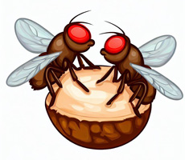
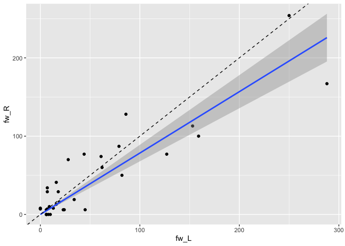
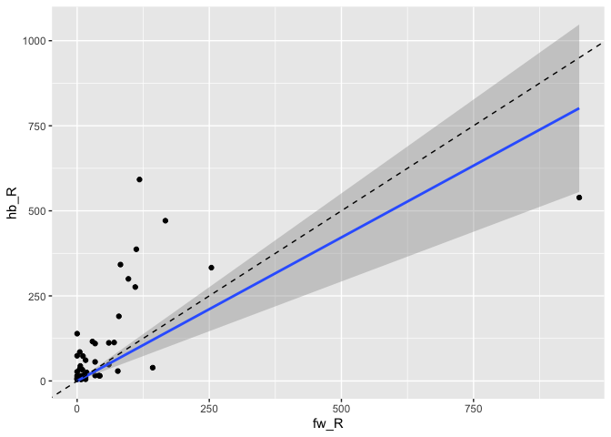
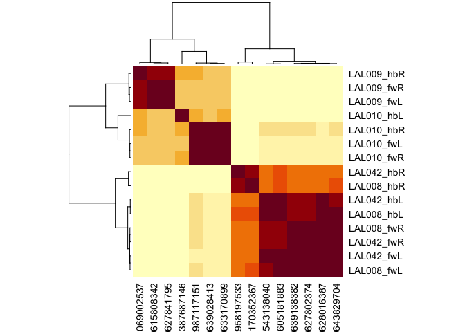

coconatfly enables comparative/integrative connectomics across Drosophila datasets. The philosophy is to provide access to the most important functions for connectome analysis in a way that is both convenient and uniform across Drosophila datasets. The package builds upon the coconat package which provides more basic and/or dataset agnostic functionality. In case you were wondering, coconat stands for COmparative COnnectomics for the NATverse and coconatfly enables this specifically for fly datasets.
Although the code is already in active use, especially for comparison of the hemibrain and flywire datasets, it remains experimental. Therefore the interface should not yet been relied upon. In particular, it is quite likely that refactoring will abstract more functionality into coconat as time goes by in order to enable more core functionality to be reused.
Datasets
At present the following datasets are supported (dataset names used in the package in brackets):
- Janelia hemibrain (hemibrain)
- Female Adult Fly Brain - FlyWire connectome (flywire)
- Janelia male Ventral Nerve Cord (manc)
- Wei Lee, John Tuthill and colleagues Female Adult Nerve Cord (fanc)
- Janelia Male CNS (malecns)
The first four datasets are either public (hemibrain, manc) or access can be requested subject to agreeing to certain terms of use (flywire, fanc). The Male CNS dataset is currently in the early stages of proofreading and annotation in a collaboration between the FlyEM and Cambridge Drosophila Connectomics Group. Release is anticipated early 2024.
Installation
You can install the development version of coconatfly like so:
install.packages('natmanager')
natmanager::install(pkgs = 'coconatfly')Some of the datasets exposed by coconatfly require authentication for access or are still being annotated in private pre-release. Please consult individual package dependencies for authentication details and do not be surprised if you do not have access to all datasets at this time.
For installation of private packages (currently restricted to the male cns dataset being developed with our collaborators at the FlyEM Team at Janelia) you will need a GITHUB_PAT (Personal Access Token - an alternative to a username+password).
This code checks if you have a PAT GITHUB_PAT and offers to make one if necessary.
natmanager::check_pat()An example
First let’s load the libraries we need
Two important functions are cf_ids() which allows you to specify a set of neurons from one or more datasets and cf_meta() which fetches information about the cell type. For example let’s fetch information about DA1 projection neurons:
cf_meta(cf_ids('DA1_lPN', datasets = 'hemibrain'))
#> id pre post upstream downstream status statusLabel voxels
#> 1 1734350788 621 2084 2084 4903 Traced Roughly traced 1174705998
#> 2 1734350908 725 2317 2317 5846 Traced Roughly traced 1382228240
#> 3 1765040289 702 2398 2398 5521 Traced Roughly traced 1380855164
#> 4 5813039315 691 2263 2263 5577 Traced Roughly traced 1016515847
#> 5 722817260 701 2435 2435 5635 Traced Roughly traced 1104413432
#> 6 754534424 646 2364 2364 5309 Traced Roughly traced 1265805547
#> 7 754538881 623 2320 2320 4867 Traced Roughly traced 1217284590
#> cropped instance type cellBodyFiber notes soma side class group
#> 1 FALSE DA1_lPN_R DA1_lPN AVM02 <NA> TRUE R <NA> <NA>
#> 2 FALSE DA1_lPN_R DA1_lPN AVM02 <NA> TRUE R <NA> <NA>
#> 3 FALSE DA1_lPN_R DA1_lPN AVM02 <NA> TRUE R <NA> <NA>
#> 4 FALSE DA1_lPN_R DA1_lPN AVM02 <NA> FALSE R <NA> <NA>
#> 5 FALSE DA1_lPN_R DA1_lPN AVM02 <NA> FALSE R <NA> <NA>
#> 6 FALSE DA1_lPN_R DA1_lPN AVM02 <NA> TRUE R <NA> <NA>
#> 7 FALSE DA1_lPN_R DA1_lPN AVM02 <NA> TRUE R <NA> <NA>
#> dataset key
#> 1 hemibrain hb:1734350788
#> 2 hemibrain hb:1734350908
#> 3 hemibrain hb:1765040289
#> 4 hemibrain hb:5813039315
#> 5 hemibrain hb:722817260
#> 6 hemibrain hb:754534424
#> 7 hemibrain hb:754538881We can also do that for multiple brain datasets
da1meta <- cf_meta(cf_ids('DA1_lPN', datasets = c('hemibrain', 'flywire')))
#> Updating 2918 ids
#> flywire_rootid_cached: Looking up 2918 missing keys
#> Updating 12286 ids
#> flywire_rootid_cached: Looking up 12285 missing keys
head(da1meta)
#> id side class type group instance dataset
#> 1 720575940604407468 R central DA1_lPN <NA> DA1_lPN_R flywire
#> 2 720575940623543881 R central DA1_lPN <NA> DA1_lPN_R flywire
#> 3 720575940637469254 R central DA1_lPN <NA> DA1_lPN_R flywire
#> 4 720575940614309535 L central DA1_lPN <NA> DA1_lPN_L flywire
#> 5 720575940617229632 R central DA1_lPN <NA> DA1_lPN_R flywire
#> 6 720575940619385765 L central DA1_lPN <NA> DA1_lPN_L flywire
#> key
#> 1 fw:720575940604407468
#> 2 fw:720575940623543881
#> 3 fw:720575940637469254
#> 4 fw:720575940614309535
#> 5 fw:720575940617229632
#> 6 fw:720575940619385765
da1meta %>%
count(dataset, side)
#> dataset side n
#> 1 flywire L 8
#> 2 flywire R 7
#> 3 hemibrain R 7We can also fetch connectivity for these neurons:
da1ds <- da1meta %>%
cf_partners(threshold = 5, partners = 'output')
head(da1ds)
#> # A tibble: 6 × 8
#> pre_id post_id weight side type dataset pre_key post_key
#> <int64> <int64> <int> <chr> <chr> <chr> <chr> <chr>
#> 1 7e17 7e17 64 L DA1_vPN flywire fw:720575940605102694 fw:7205759…
#> 2 7e17 7e17 50 L <NA> flywire fw:720575940603231916 fw:7205759…
#> 3 7e17 7e17 49 R LHAV4a4 flywire fw:720575940604407468 fw:7205759…
#> 4 7e17 7e17 48 R DA1_vPN flywire fw:720575940623303108 fw:7205759…
#> 5 7e17 7e17 46 L v2LN30 flywire fw:720575940603231916 fw:7205759…
#> 6 7e17 7e17 42 L DA1_vPN flywire fw:720575940603231916 fw:7205759…
da1ds %>%
group_by(type, dataset, side) %>%
summarise(weight=sum(weight), npre=n_distinct(pre_id), npost=n_distinct(post_id))
#> `summarise()` has grouped output by 'type', 'dataset'. You can override using
#> the `.groups` argument.
#> # A tibble: 256 × 6
#> # Groups: type, dataset [209]
#> type dataset side weight npre npost
#> <chr> <chr> <chr> <int> <int> <int>
#> 1 AL-AST1 flywire L 16 2 1
#> 2 AL-AST1 flywire R 13 2 1
#> 3 AL-AST1 hemibrain R 25 3 1
#> 4 APL flywire L 28 4 1
#> 5 APL flywire R 70 6 1
#> 6 APL hemibrain R 113 6 1
#> 7 AVLP010 flywire L 6 1 1
#> 8 AVLP010 flywire R 83 6 1
#> 9 AVLP011,AVLP012 flywire L 6 1 1
#> 10 AVLP011,AVLP012 flywire R 22 2 1
#> # ℹ 246 more rowsLet’s restrict that to types that are observed in both datasets. We do this by counting how many distinct datasets exist for each type in the results.
da1ds.shared_types.wide <- da1ds %>%
filter(!(dataset=='hemibrain' & side=='L')) %>% # drop truncated hemibrain LHS
group_by(type) %>%
mutate(datasets_type=n_distinct(dataset)) %>%
filter(datasets_type>1) %>%
group_by(type, dataset, side) %>%
summarise(weight=sum(weight)) %>%
mutate(shortdataset=abbreviate_datasets(dataset)) %>%
tidyr::pivot_wider(id_cols = type, names_from = c(shortdataset,side),
values_from = weight, values_fill = 0)
#> `summarise()` has grouped output by 'type', 'dataset'. You can override using
#> the `.groups` argument.
da1ds.shared_types.wide
#> # A tibble: 38 × 4
#> # Groups: type [38]
#> type fw_L fw_R hb_R
#> <chr> <int> <int> <int>
#> 1 AL-AST1 16 13 25
#> 2 APL 28 70 113
#> 3 DA1_lPN 45 6 73
#> 4 DA1_vPN 250 254 333
#> 5 DNb05 6 0 5
#> 6 KCg-m 3275 2545 3030
#> 7 LHAD1g1 62 60 48
#> 8 LHAV2a3 70 128 154
#> 9 LHAV2b11 44 77 29
#> 10 LHAV3k6 19 16 5
#> # ℹ 28 more rowsWith the data organised like this, we can easily compare the connection strengths between the cell types across hemispheres:
library(ggplot2)
da1ds.shared_types.wide %>%
filter(type!='KCg-m') %>%
ggplot(data=., aes(fw_L, fw_R)) +
geom_point() +
stat_smooth(method = "lm", formula = y ~ x + 0) +
geom_abline(slope=1, linetype='dashed')
… and across datasets:
da1ds.shared_types.wide %>%
filter(type!='KCg-m') %>%
ggplot(data=., aes(fw_R, hb_R)) +
geom_point() +
stat_smooth(method = "lm", formula = y ~ x + 0) +
geom_abline(slope=1, linetype='dashed')
Across dataset connectivity clustering
Being able to fetch shared connectivity in a uniform format is a building block for a range of analyses. For example, we can compare the connectivity of a set of neurons that are believed to constitute the same cell type across multiple datasets. Cosine similarity clustering seems to work very well for this purpose.
cf_cosine_plot(cf_ids('/type:LAL0(08|09|10|42)', datasets = c("flywire", "hemibrain")))
#> Updating 2918 ids
#> Updating 12286 ids
#> Matching types across datasets. Dropping 461/976 output partner types with total weight 8050/23730
#> Matching types across datasets. Dropping 737/1356 input partner types with total weight 10875/26780
Each row (and column) correspond to a single neuron. Rows are labelled by cell type, dataset and hemisphere; due to truncation hemibrain neurons sometimes exist in one hemisphere, sometimes both. Notice that LAL009 and LAL010 neurons from each hemisphere co-cluster together exactly as we would expect for a cell type conserved across brains. In contrast LAL008 and LAL042 are intermingled; we believe that these constitute a single cell type of two cells / hemisphere (i.e. they should not have been split into two cell types in the hemibrain).
You can also see that cells from one hemibrain hemisphere often cluster slightly oddly (e.g. 387687146) - this is likely due to truncation of the axons or dendrites of these cells or a paucity of partners from the left hand side of the hemibrain.
Going further
We strongly recommend consulting the online manual visible at https://natverse.org/coconatfly/. In particular the vignette(s) listed at https://natverse.org/coconatfly/articles provide full code and instructions for a step by step walk through.
Acknowledgements
Upon publication, please ensure that you appropriately cite all datasets that you use in your analysis. In addition in order to justify continued development of natverse tools in general and coconatfly in particular, we would appreciate two citations for
- For the natverse: Bates et al eLife 2020
- For coconatfly: Schlegel et al bioRxiv 2023
Should you make significant use of natverse packages in your paper (e.g. multiple panels or >1 figure), we would also strongly appreciate a statement like this in the acknowledgements that can be tracked by our funders.
Development of the natverse including the coconatfly and fafbseg packages has been supported by the NIH BRAIN Initiative (grant 1RF1MH120679-01), NSF/MRC Neuronex2 (NSF 2014862/MC_EX_MR/T046279/1) and core funding from the Medical Research Council (MC_U105188491).